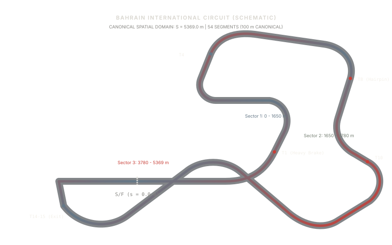
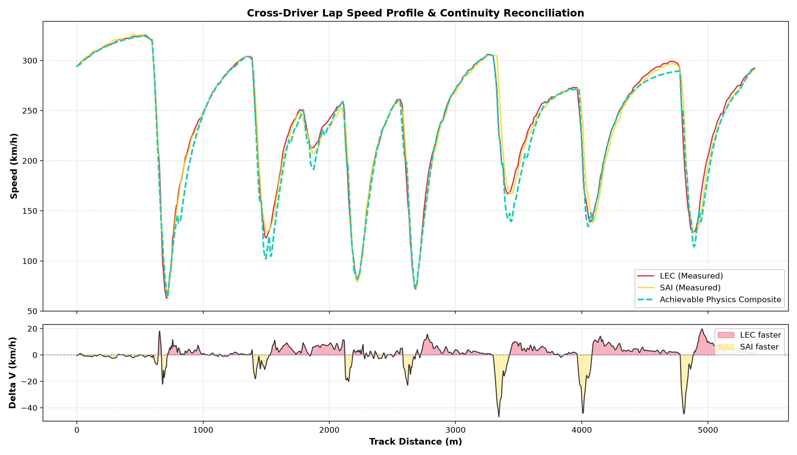
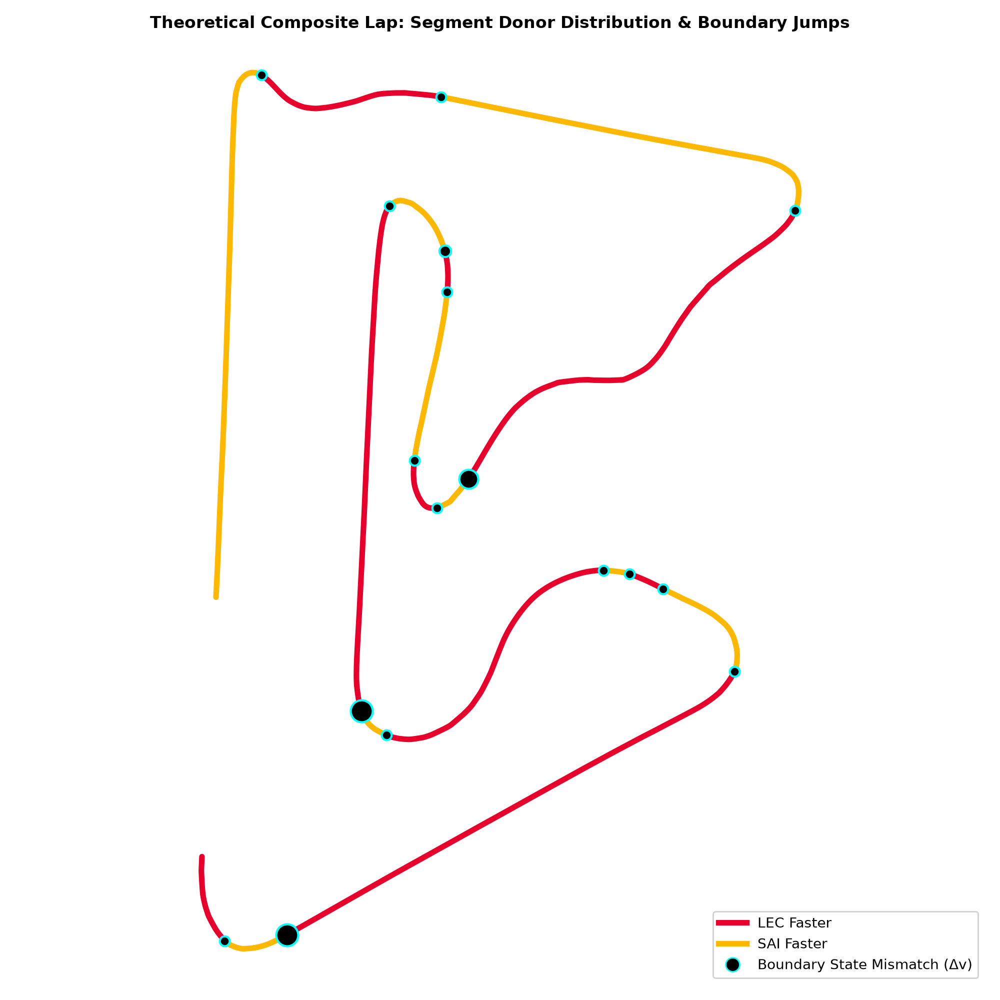
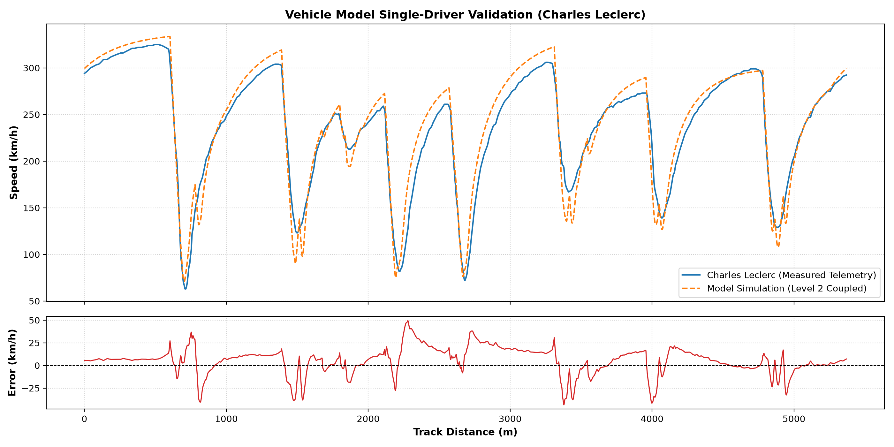
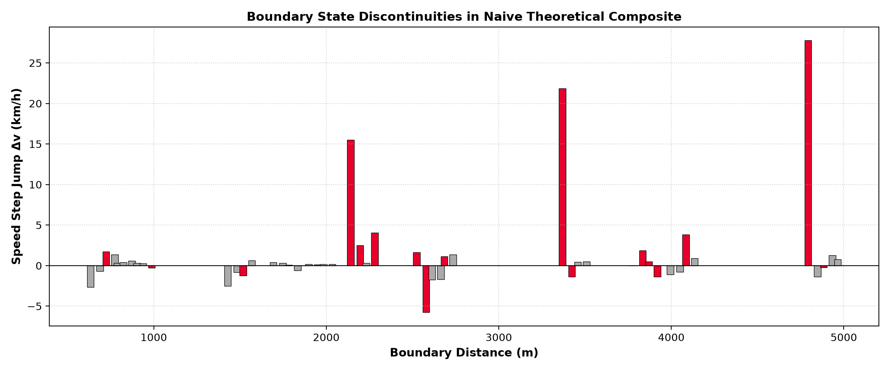
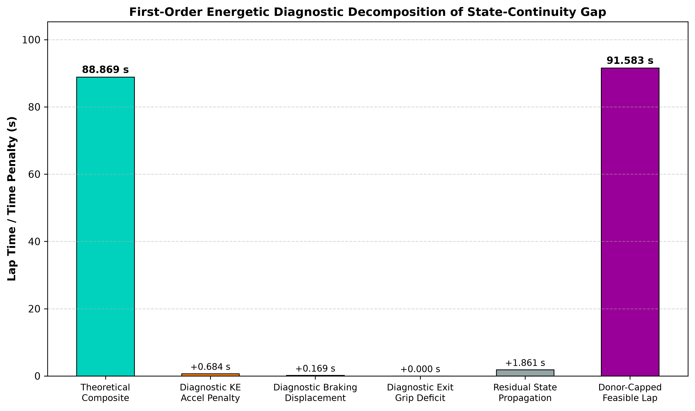
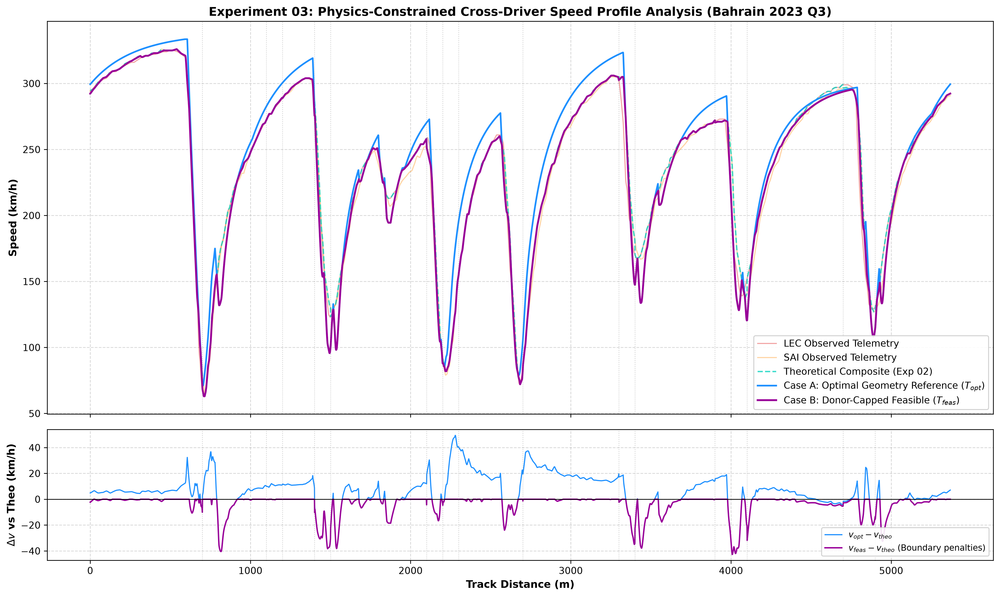
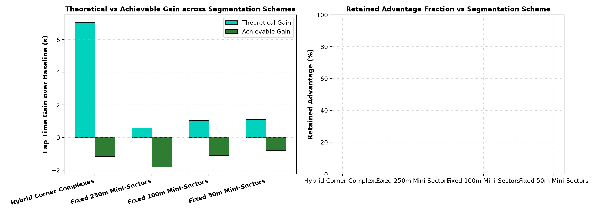

In Formula 1 telemetry debriefs, "ideal" or "theoretical best" laps are routinely constructed by summing the fastest observed mini-sector times across teammates. This investigation evaluates the physical validity of that construct by applying a Level-2 coupled point-mass vehicle dynamics solver with tire friction ellipse coupling and periodic boundary conditions to official 2023 Bahrain GP Q3 telemetry.

Why "ideal" lap times constructed by splicing fastest sectors represent a dynamic impossibility under continuous vehicle physics.
Modern Formula 1 broadcast timing graphics and team debriefings routinely compute an "ideal lap" by aggregating the minimum elapsed times across arbitrary track micro-sectors. This construct is presented as the theoretical ceiling of car-driver potential for that session.
However, this calculation treats mini-sectors as decoupled, independent time trials. It ignores the fundamental physical reality that the exit velocity vector of sector k constitutes the mandatory initial boundary condition for sector k+1.
Let driver \(A\) be faster in sector \(k\) and driver \(B\) faster in sector \(k+1\). In empirical telemetry, \(v_{A,\text{exit}} \neq v_{B,\text{entry}}\).
Reconciling a non-zero velocity step change across an infinitesimal spatial boundary \(\Delta s \to 0\) requires infinite tire traction force and infinite power, violating Newton's second law and Coulomb friction limits.
Core Question: When the fastest segments of teammate Formula 1 drivers are combined, how much of the theoretical time advantage survives when continuous vehicle dynamics and boundary state compatibility are strictly enforced?
Objectives:
• Ingest and spatially align official telemetry.
• Formulate and calibrate a macroscopic Level-2 coupled point-mass vehicle model.
• Solve the periodic boundary value problem for feasible lap time.
• Decompose the feasibility gap into constituent physical penalties.
Extraction, monotonic spatial distance transformation, PCHIP resampling, and track curvature derivation from official 2023 Bahrain GP Q3 telemetry.
| Constructor | Driver Pair | Grand Prix & Session | Fastest Lap Recorded | Official LapTime | Spatially Integrated Time | Domain Length (S) |
|---|---|---|---|---|---|---|
| Scuderia Ferrari | Charles Leclerc (LEC) • Carlos Sainz (SAI) | 2023 Bahrain GP • Q3 | LEC Lap 12 • SAI Lap 12 | 89.921 s • 90.110 s | 89.921 s • 90.110 s | 5369.0 m |
| Red Bull Racing | Max Verstappen (VER) • Sergio Pérez (PER) | 2023 Bahrain GP • Q3 | VER Lap 13 • PER Lap 12 | 89.708 s • 89.846 s | 89.590 s • 89.623 s | 5358.0 m |


Rigorous mathematical formulation of the macroscopic point-mass vehicle dynamics model, tire friction ellipse limits, and the periodic forward-backward solver.
The vehicle of mass \(m = 810\text{ kg}\) is governed by longitudinal dynamics formulated directly in the spatial coordinate \(s\):
Variables: \(m\) = mass (810 kg), \(v\) = speed (m/s), \(s\) = track distance (m), \(F_x\) = net longitudinal tire force (N), \(F_{\text{rr}}\) = rolling resistance (\(m g C_{rr}\), \(C_{rr} = 0.015\)).
Vertical aerodynamic downforce scales with the square of forward velocity, augmenting static gravitational normal load:
Variables: \(g\) = gravity (\(9.81\text{ m/s}^2\)), \(k_{\text{down}}\) = aerodynamic downforce coefficient (\(\text{N}/(\text{m/s})^2\)). At 300 km/h (\(83.3\text{ m/s}\)), aerodynamic downforce exceeds static vehicle weight by more than 2.5×.
Longitudinal traction is constrained by powertrain power ceilings and tire adhesion limits:
Variables: \(P_{\max} = 740.0\text{ kW}\) (hybrid powertrain thermal + electrical limit), \(\mu_x = 1.700\) (fixed longitudinal friction under Policy A).
In cornering, lateral acceleration \(a_y = v^2 |\kappa(s)|\) consumes tire grip, reducing available longitudinal force:
Variables: \(\kappa(s)\) = curvature (\(\text{m}^{-1}\)), \(\mu_y\) = lateral grip coefficient. Lateral limit determines corner apex speed: \(v_{\text{corner}} = \sqrt{\frac{\mu_y F_z}{m |\kappa|}}\).
The physics-constrained feasible lap speed profile \(v_{\text{feasible}}(s)\) is solved using a deterministic three-pass algorithm:
To prevent unphysical parameter compensation (e.g. inflating drag to mask grip deficiencies), the calibration strictly enforces Policy A:
Systematic experimental progression from session selection and vehicle model validation through naive composite assembly, physics solve, and spatial discretization sweep.
Objective: Screen candidate 2023 Formula 1 qualifying sessions to identify a teammate pair with identical machinery, dry weather, comparable tire compounds, and high qualifying performance.
| Driver | Official Transponder | Spatial Integrated | v_min | v_max | v_mean | DRS Distance |
|---|---|---|---|---|---|---|
| Charles Leclerc (LEC) | 89.921 s | 89.921 s | 63.0 km/h | 324.0 km/h | 237.1 km/h | 1752.0 m |
| Carlos Sainz (SAI) | 90.110 s | 90.110 s | 63.0 km/h | 321.0 km/h | 236.4 km/h | 1752.0 m |
Objective: Validate three tiers of point-mass vehicle models against observed single-driver telemetry to establish simulation fidelity and qualify Level 2 for feasibility research.
| Model Tier | Driver Test | Sim Lap | Ref Lap | Lap Error | Speed RMSE | Verdict |
|---|---|---|---|---|---|---|
| Level 0: Pure Longitudinal | LEC (Training) | 101.597 s | 89.921 s | +11.675 s | 10.975 m/s | FAILED_UNTRUSTABLE |
| Level 1: Longitudinal + Aero | LEC (Training) | 89.068 s | 89.921 s | -0.853 s | 3.616 m/s | INADEQUATE |
| Level 2: Coupled (Policy A) | LEC (Training) | 88.393 s | 89.921 s | -1.528 s | 4.289 m/s | FEASIBILITY MODEL |
| Level 2: Coupled (Policy A) | SAI (Cross-Val) | 87.738 s | 90.110 s | -2.372 s | 4.699 m/s | FEASIBILITY MODEL |

Objective: Construct the segment-wise minimum-time composite across 54 fixed 100m sectors for Ferrari and audit velocity and energy boundary jumps.

Objective: Execute the Level-2 coupled forward-backward solver with donor speed envelope caps and periodic boundary bisection on the 100m composite.
| Metric | Value | Physical Engineering Interpretation |
|---|---|---|
| Theoretical Lap Time (\(T_{\text{theo}}\)) | 88.869 s | Unconstrained piecewise mini-sector minimum time |
| Feasible Lap Time (\(T_{\text{feas}}\)) | 91.583 s | Continuous \(C^0\) periodic solve respecting donor speed caps |
| Theoretical-to-Feasible Gap (\(\Delta T_{\text{gap}}\)) | +2.714 s | Net time debt to eliminate boundary step discontinuities |
| Net Gain vs Faster Baseline (LEC) | -1.661 s | Feasible composite is 1.661 s SLOWER than observed Leclerc lap |
| Periodicity Closure Residual | 0.00738 m/s | Strictly meets convergence tolerance (\(\le 0.01\text{ m/s}\)) |
Objective: Sweep spatial segment lengths across 50m, 100m, and 250m to test whether the feasibility penalty is robust or an artifact of discretization.
| Resolution | Segments | Theoretical | Feasible | Feasibility Gap | Switches | Max \(\Delta v\) | Total \(\Delta KE\) |
|---|---|---|---|---|---|---|---|
| 50 m (Fine) | 108 | 88.815 s | 91.269 s | +2.454 s | 20 | 11.10 km/h | 673.03 kJ |
| 100 m (Canonical) | 54 | 88.869 s | 91.583 s | +2.714 s | 15 | 11.70 km/h | 832.24 kJ |
| 250 m (Coarse) | 22 | 89.327 s | 92.233 s | +2.906 s | 11 | 10.54 km/h | 623.44 kJ |
Decomposition of the theoretical-to-feasible lap time penalty into kinetic energy dissipation, braking displacement, corner exit traction, and residual state propagation debt.
| Constructor | Driver 1 Observed | Driver 2 Observed | Theoretical Composite | Physics-Feasible Lap | Feasibility Gap (ΔT) | Switches | Dominant Diagnostic Term |
|---|---|---|---|---|---|---|---|
| Scuderia Ferrari SF-23 | 89.921 s (LEC) | 90.110 s (SAI) | 88.869 s (-1.053s) | 91.583 s | +2.714 s | 15 | ΔT_residual (+1.861 s, 68.6%) |
| Red Bull Racing RB19 | 89.590 s (VER) | 89.623 s (PER) | 88.674 s (-0.916s) | 92.810 s | +4.136 s | 13 | ΔT_residual (+3.808 s, 92.1%) |
The total feasibility gap \(\Delta T_{\text{gap}}\) is decomposed into four physical penalty terms:


Testing whether the theoretical-to-feasible gap is an artifact of the chosen 100m segmentation or an invariant property across spatial scales (50m, 100m, 250m).
Select a spatial segment length to inspect resulting boundary discontinuities, lap times, and driver distance allocations:
| Constructor • Scale | Theoretical | Feasible | Feasibility Gap | Switches |
|---|---|---|---|---|
| Ferrari • 50m | 88.815 s | 91.269 s | +2.454 s | 20 |
| Ferrari • 100m | 88.869 s | 91.583 s | +2.714 s | 15 |
| Ferrari • 250m | 89.327 s | 92.233 s | +2.906 s | 11 |
| Red Bull • 50m | 88.638 s | 92.799 s | +4.162 s | 21 |
| Red Bull • 100m | 88.674 s | 92.810 s | +4.136 s | 13 |
| Red Bull • 250m | 88.988 s | 93.164 s | +4.177 s | 9 |

Comparative technical evaluation of two frontline 2023 Formula 1 chassis under independent calibrations and empirical spatial domain traces.
| Scientific Metric | Scuderia Ferrari SF-23 | Oracle Red Bull Racing RB19 | Engineering Significance |
|---|---|---|---|
| Driver Pairing | Charles Leclerc • Carlos Sainz | Max Verstappen • Sergio Pérez | Two frontline 2023 constructor pairings |
| Modeled Track Domain (S) | 5369.0 m (5370 samples) | 5358.0 m (5359 samples) | 11.0 m empirical racing-line variance (0.2%) |
| Observed Teammate Delta | +0.189 s (LEC ahead) | +0.033 s (VER ahead) | Red Bull teammates closely matched in Q3 |
| Theoretical Composite (100m) | 88.869 s | 88.674 s | RB19 theoretical floor is faster |
| Theoretical Advantage vs Leader | +1.053 s vs LEC | +0.916 s vs VER | Both pairings show ~1s naive potential |
| Physics-Feasible Lap (100m) | 91.583 s | 92.810 s | Continuous Level-2 periodic solve |
| Feasibility Gap (ΔT_gap) | +2.714 s | +4.136 s | Red Bull feasibility penalty is +52% larger |
| Net Retained Advantage | -1.661 s | -3.220 s | Neither composite beats faster baseline |
| Driver Switches (100m) | 15 switches | 13 switches | High boundary discontinuity frequency |
| Max Velocity Step Jump (Δv) | 11.70 km/h (3.251 m/s) | 8.28 km/h (2.299 m/s) | Smaller instantaneous step jumps in RB19 |
| Total Energy Mismatch (∑|ΔKE|) | 832.24 kJ | 316.59 kJ | Lower boundary kinetic energy jump in RBR |
| Dominant Diagnostic Term | ΔT_residual = +1.861 s (68.6%) | ΔT_residual = +3.808 s (92.1%) | Speed debt accumulates heavily in both cars |
| Periodicity Closure Error | 0.00738 m/s | 0.00180 m/s | Both strictly meet ≤ 0.01 m/s tolerance |
Why does Red Bull exhibit a larger feasibility gap (+4.136 s vs +2.714 s) despite smaller instantaneous boundary jumps (Δv = 8.28 km/h vs 11.70 km/h)?
The RB19's higher calibrated aerodynamic downforce (\(k_{\text{down}} = 2.5320\) vs \(1.8410\)) allows exceptional cornering speeds in the observed donor traces. However, when the solver is forced to decelerate earlier to meet downstream entry ceilings, the resulting speed debt persists over longer forward integration horizons before the powertrain can accelerate back to the donor ceiling.
Critical Methodological Notice: These results do NOT prove that one constructor, car, or driver is superior to another.
Each study was conducted under an independent calibration on empirical qualifying trajectories. Telemetry from Ferrari and Red Bull is never combined into a single hybrid composite. The two studies serve solely to demonstrate that the failure of naive theoretical composite laps is an invariant phenomenon observed across different chassis and driving pairs.
Transparent scientific evaluation of telemetry fidelity, vehicle dynamics simplifications, and solver boundaries.
Analysis is restricted to a single dry qualifying session (2023 Bahrain GP Q3). While this isolates maximum performance on identical soft tires, findings cannot be generalized to wet conditions, race stints with tire degradation, or circuits with differing aero demands (e.g. Monza or Monaco).
The vehicle is modeled as a macroscopic point mass. Transient yaw moment dynamics, body roll, pitch under braking, vertical suspension travel, and dynamic load transfer across axles are omitted.
A classical Coulomb friction ellipse is used. Real-world tire mechanics involve nonlinear slip angle saturation (Pacejka formulation), camber thrust, and surface/bulk tire temperature dependencies that are unavailable in public telemetry.
The constraint \(v(s) \le v_{\text{donor}}(s)\) enforces that the feasible lap cannot exceed what the donor driver demonstrated. While physically conservative, it prevents the solver from discovering alternative optimal racing lines or novel trajectory combinations.
FastF1 provides broadcast-grade telemetry resampled from ~10 Hz GPS and engine streams. Crucial engineering channels—including brake line pressure, steering wheel angle, and differential lock percentages—are absent from public feeds.
The 4-term gap attribution (\(\Delta T_{KE}, \Delta T_{\text{brake}}, \Delta T_{\text{traction}}, \Delta T_{\text{residual}}\)) is an analytical decomposition of the forward-backward solver's numerical state. It should not be interpreted as four independent, decoupled real-world physical forces.
Summary of demonstrated engineering findings and proposed avenues for multi-body and optimal control research extensions.
Technical specifications, project architecture, verified software environment, and step-by-step reproduction instructions.
This project was developed as a rigorous, open-source vehicle dynamics research pipeline and technical engineering portfolio. All algorithms are implemented from first principles in Python with zero black-box optimization libraries.
To independently verify and reproduce all mathematical calculations, experiment outputs, and website figures from scratch: